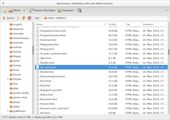
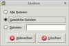
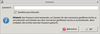

File Roller
Dieser Artikel wurde für die folgenden Ubuntu-Versionen getestet:
Ubuntu 16.04 Xenial Xerus
Ubuntu 14.04 Trusty Tahr
Zum Verständnis dieses Artikels sind folgende Seiten hilfreich:
File Roller  ist der Standard-Archivmanager der Desktop-Umgebungen Unity und GNOME. Es ist ein grafisches Frontend zu verschiedenen Kompressions- und Packprogrammen wie tar und zip, kann allerdings auch auf der Kommandozeile verwendet werden. Das Programm wird unter der GNU General Public License (GPL) herausgegeben.
ist der Standard-Archivmanager der Desktop-Umgebungen Unity und GNOME. Es ist ein grafisches Frontend zu verschiedenen Kompressions- und Packprogrammen wie tar und zip, kann allerdings auch auf der Kommandozeile verwendet werden. Das Programm wird unter der GNU General Public License (GPL) herausgegeben.
Auswahl der wichtigsten Programmfunktionen:
Erzeugen, Modifizieren und Extrahieren von Archiven.
Betrachten und Bearbeiten von Archivinhalten.
Ändern von Archivformaten.
Passwortschutz
Integritätsprüfung
Tastenkürzel
Auswahl unterstützter Archivformate (teils unter Verwendung von Zusatzpaketen): .7z, .ace, .arj, .cab, .zip, .iso, .jar, .lrz, .lzh, .lha, .rar, .tar (auch komprimiert), .deb (nur lesend), .rpm (nur lesend) u.v.m.
Installation¶
|  |
| File Roller |
File Roller ist bei Ubuntu vorinstalliert. Möchte man das Programm nachinstallieren, so erfolgt dies aus den offiziellen Paketquellen über das Paket
file-roller
 mit apturl
mit apturl
Paketliste zum Kopieren:
sudo apt-get install file-roller
sudo aptitude install file-roller
Nach der Installation erscheint das Programm im Hauptmenü unter dem Menüpunkt "Zubehör" bzw. "Dienstprogramme" (unter KDE).
Einige Archivformate werden erst nach Installation von Zusatzpaketen unterstützt:
p7zip-full (universe Unterstützung von 7ZIP - .7z)
lrzip (universe Unterstützung von LRZIP/RZIP - .lrz)
ncompress (universe Unterstützung von COMPRESS - .Z, .tar.Z, .taz)
sharutils (main Unterstützung von SHAR - .shar)
lzop (universe Unterstützung von LZO - .lzo, .tar.lzo, .tzo)
lha (multiverse Unterstützung von LHA - .lzh, .lha)
arj (universe Unterstützung von ARJ - .arj)
unace (universe Unterstützung von ACE - .ace)
unrar-free (universe Extrahieren von RAR - .rar)
mit apturl
Paketliste zum Kopieren:
sudo apt-get install p7zip-full lrzip ncompress sharutils lzop lha arj unace unrar-free
sudo aptitude install p7zip-full lrzip ncompress sharutils lzop lha arj unace unrar-free
Erstellen von RAR (.rar):
rar (multiverse)
mit apturl
Paketliste zum Kopieren:
sudo apt-get install rar
sudo aptitude install rar
Hinweis:
Die Anwendung rar ist Shareware; nach 40 Tagen Benutzung ist eine Registrierung notwendig.
Benutzung¶
Verwendung der graphischen Programmoberfläche¶
File Roller ist vollständig in Nautilus, den Dateimanager der GNOME Desktop-Umgebung, integriert. Das Programm ist aber auch in anderen Dateimanagern wie z.B. Thunar per  -Klick-Menü erreichbar. Ansonsten kann File Roller in seinem Hauptfenster über die dafür vorgesehenen Menüs, über Schaltflächen in der Werkzeugleiste oder per Drag'n'Drop bedient werden.
-Klick-Menü erreichbar. Ansonsten kann File Roller in seinem Hauptfenster über die dafür vorgesehenen Menüs, über Schaltflächen in der Werkzeugleiste oder per Drag'n'Drop bedient werden.
| Übersicht über die Benutzung | ||||
| Aktion | Erreichbarkeit | Symbol | Tastenkürzel | Erklärung/Bedienungsalternativen |
| Archiv erstellen | "Archiv -> Neu" | Strg + N | Alternativ markiert man die zu archivierenden Dateien im Dateimanager und wählt "Komprimieren" oder "Archiv anlegen" aus dem mittels -Maustaste erscheinenden Kontextmenü. | |
| Archiv öffnen | "Archiv -> Öffnen" | Strg + O | Ein Doppelklick mit der  -Maustaste auf ein Archiv öffnet dieses in File Roller. -Maustaste auf ein Archiv öffnet dieses in File Roller. | |
| Archiv entpacken | "Archiv -> Entpacken" | Strg + E | Das Entpacken von Archiven kann auch im Dateimanager über -Klick-Menü "Hier entpacken"/"Entpacken nach..." vorgenommen werden. Im Programmhauptfenster von File Roller können aus einem bestehenden Archiv auch einzelne Dateien per Drag'n'Drop entpackt werden. | |
| Dateien/Ordner zu einem Archiv hinzufügen | "Bearbeiten -> Dateien hinzufügen" bzw. "Bearbeiten -> Einen Ordner hinzufügen" | Neue Dateien/Ordner lassen sich zu einem bestehenden Archiv auch durch Drag'n'Drop hinzufügen. | ||
| Dateien in Archiv umbenennen | "Bearbeiten -> Umbenennen" | F2 | ||
| Dateien in Archiv löschen | "Bearbeiten -> Löschen" | Entf | Das Löschen von Dateien in einem Archiv kann innerhalb von File Roller auch durch Anklicken mit der -Maustaste erfolgen. Im aufklappenden Kontextmenü ist der Eintrag "Löschen" zu wählen. Die Aktion kann anschließend noch in einem kleinen nachgelagerten Dialogfeld präzisiert werden. | |
| Dateiliste | "Ansicht -> Alle Dateien anzeigen" | Strg + 1 | Den Inhalt eines Archivs als Dateiliste anzeigen. | |
| Ordneransicht | "Ansicht -> Als Ordner anzeigen" | Strg + 2 | Den Inhalt eines Archivs als Ordnerstruktur anzeigen. | |
| Baumansicht anzeigen | "Ansicht -> Ordner" | F9 | In der Seitenleiste die Ordner in einer Baumansicht anzeigen. | |
| Archiveigenschaften | "Archiv -> Eigenschaften" | Strg + ⏎ | Gibt die Eigenschaften des Archivs wieder, wie z.B. Änderungsdatum, Archivgröße, Inhaltsgröße, Kompressionsgrad und Anzahl der enthaltenen Dateien. | |
| Passwortschutz | "Bearbeiten -> Passwort" | Archive lassen sich mit einem Passwort schützen. Über den Menüdialog muss vor Hinzufügen der zu schützenden Dateien ein geeignetes Passwort vergeben werden. Dieses wird anschließend auf alle im Nachhinein hinzugefügten Dateien angewendet. | ||
| Integritätsprüfung | "Archiv -> Integritätsprüfung" | Über diesen Menüeintrag lässt sich ein Archiv auf Fehler überprüfen. | ||
| Hilfe | "Hilfe -> Inhalt" | F1 | Hilfe zum Archivmanager anzeigen. | |
| Programm schließen | "Archiv -> Schließen" | Strg + W | ||
Verwendung im Terminal¶
Alternativ kann das Programm File Roller auch im Terminal mit folgender Befehlssyntax verwendet werden:
file-roller [OPTION(EN)] [DATEI(EN)]
Hierbei können die folgenden Optionen hilfreich sein:
| Übersicht über die Optionen | ||
| Kurzform | Langform | Erklärung |
-a | --add-to=ARCHIV | Dateien zum angegebenen Archiv hinzufügen und das Programm beenden. |
-d | --add | Dateien zu einem anzugebenden Archiv hinzufügen und das Programm beenden. |
-e | --extract-to=ORDNER | Archive im angegebenen Ordner entpacken und das Programm beenden. |
-f | --extract | Archive in einen anzugebenden Zielordner entpacken und das Programm beenden. |
-h | --extract-here | Inhalt der Archive im Archivordner entpacken und das Programm beenden. |
--default-dir=ORDNER | Den Vorgabeordner für die --add und --extract-Befehle festlegen. | |
--force | Den Zielordner ohne Nachfrage anlegen. | |
--display=ANZEIGE | X-Anzeige, die verwendet werden soll. | |
--notify | Mithilfe des Benachrichtigungssystems über die Beendigung der Operation benachrichtigen. | |
--service | Als Dienst starten. | |
-? | --help | Hilfeoptionen anzeigen. |
--help-all | Alle Hilfeoptionen anzeigen. | |
--help-gtk | GTK+-Optionen anzeigen. | |
--help-sm-client | Optionen der Sitzungsverwaltung anzeigen. | |
-v | --version | Versionsinformationen anzeigen. |
 - Programmübersicht
- Programmübersicht- Erstellt mit Inyoka
-
 2004 – 2017 ubuntuusers.de • Einige Rechte vorbehalten
2004 – 2017 ubuntuusers.de • Einige Rechte vorbehalten
Lizenz • Kontakt • Datenschutz • Impressum • Serverstatus -
Serverhousing gespendet von